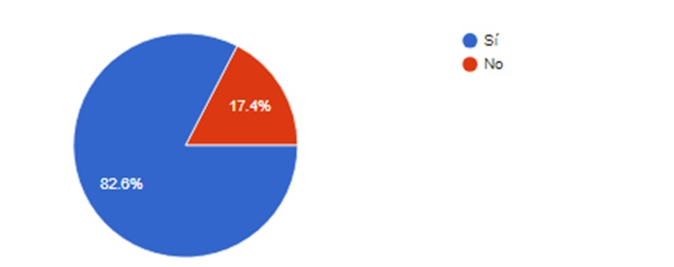
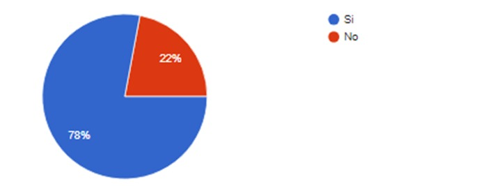
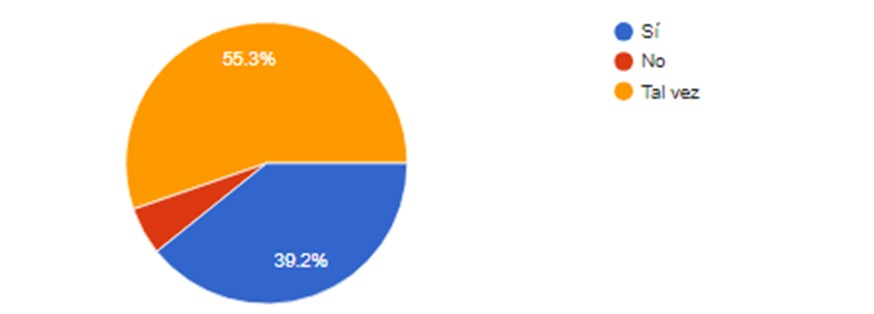
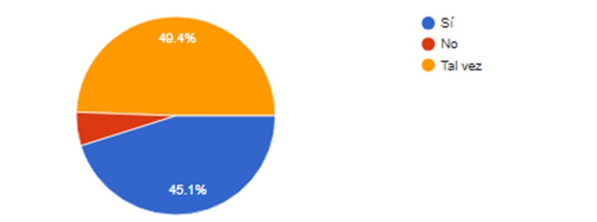
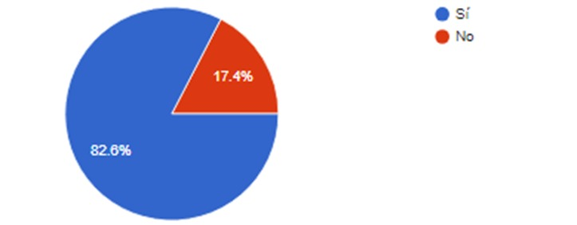
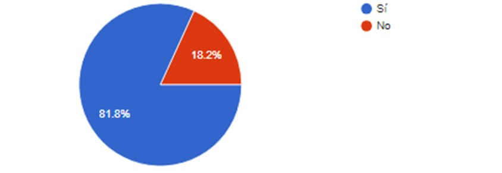
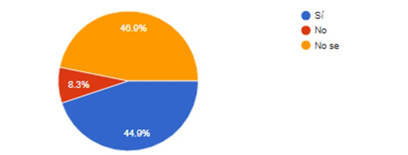
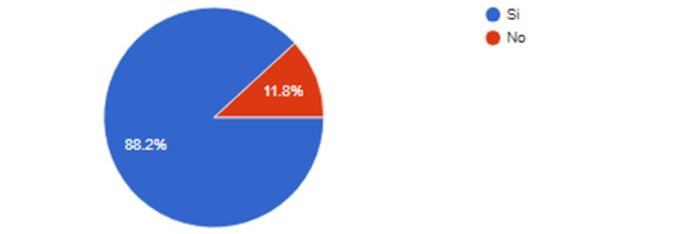
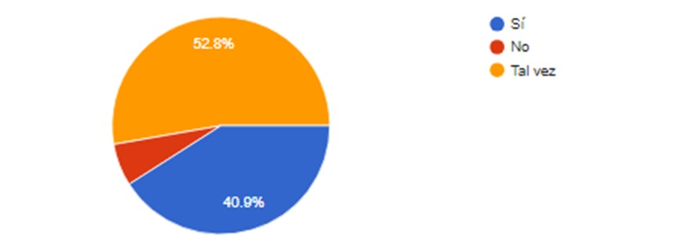
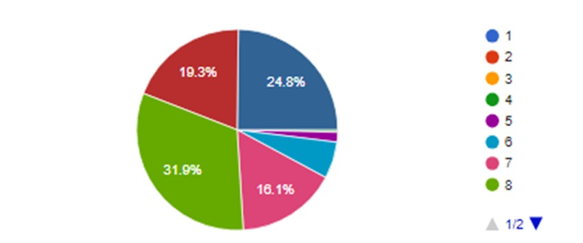

¿Usted está de acuerdo que este sistema sería una buena medida para mejorar la seguridad pública?
| Opción | Cantidad | Porcentaje |
|---|---|---|
| Si | 209 | 82.6% |
| No | 44 | 17.4% |
| Total | 253 | 100% |
De acuerdo con los resultados de la encuesta realizada, se encontró que de un total de 253 participantes, el 82.6% (209 personas) expresó su aprobación mediante votos positivos, mientras que el 17.4% restante (44 personas) emitió votos negativos. Estos datos reflejan una clara tendencia hacia la aceptación de la temática o propuesta evaluada por la mayoría de los encuestados. Es evidente que la mayoría de las opiniones son favorables, lo que indica un nivel significativo de respaldo hacia el tema en cuestión. Este respaldo mayoritario puede atribuirse a diversos factores, como la claridad de la información proporcionada, la relevancia del tema para los encuestados o la efectividad de la propuesta en sí misma.
¿Según su uso personal, prefiere el uso de una aplicación a que el uso de un sitio web?
| Opción | Cantidad | Porcentaje |
|---|---|---|
| Si | 198 | 78% |
| No | 56 | 22% |
| Total | 254 | 100% |
En la encuesta realizada, se recopilaron datos de 254 individuos, de los cuales 198 expresaron su apoyo, representando así un significativo 78% de respaldo positivo. Por otro lado, 56 participantes recibieron votos negativos, constituyendo el 22% restante. Estos resultados subrayan la notable preferencia hacia la postura afirmativa entre los encuestados. Es esencial destacar que la mayoría de los participantes se inclinaron hacia la aprobación, indicando un consenso generalizado respecto a la cuestión en consideración. Este respaldo mayoritario puede interpretarse como un indicador de la percepción positiva predominante dentro de la muestra encuestada, lo cual proporciona valiosa información sobre las opiniones y actitudes del grupo en cuestión.
¿Cree usted que este sistema tendría un impacto positivo en la reducción del robo de vehículos?
| Opción | Cantidad | Porcentaje |
|---|---|---|
| Si | 100 | 39.2% |
| No | 14 | 5.5% |
| Tal vez | 144 | 53.3% |
| Total | 255 | 100% |
De acuerdo con los resultados obtenidos de una muestra de 255 individuos que participaron en la encuesta, se observa que el 39.2% de ellos, es decir, 100 personas, expresaron su apoyo mediante un voto positivo. Por otro lado, un 5.5% de los encuestados, equivalente a 14 personas, manifestaron su desacuerdo con un voto negativo. Además, un significativo 53.3%, representado por 144 personas, optó por emitir un voto neutral, revelando así una diversidad de opiniones dentro de la muestra. Estos resultados ilustran la complejidad de las percepciones y actitudes presentes en la población encuestada, subrayando la importancia de considerar la variabilidad de opiniones al analizar los datos recopilados.
¿Cree que este sistema sería respetuoso de la privacidad de los ciudadanos?
| Opción | Cantidad | Porcentaje |
|---|---|---|
| Si | 155 | 45.1% |
| No | 14 | 5.5% |
| Tal vez | 126 | 49.4% |
| Total | 255 | 100% |
En una encuesta realizada a un grupo de 255 personas, se observó que el 45.1% de los participantes, es decir, 155 individuos, expresaron opiniones positivas. Por otro lado, un 5.5%, equivalente a 14 personas, manifestaron opiniones negativas. Además, un considerable 49.4%, representado por 126 personas, indicaron tener una postura neutral. Estos resultados ofrecen una visión detallada de las percepciones dentro de la muestra, destacando la diversidad de opiniones y actitudes expresadas por los encuestados. Es interesante analizar la gama de respuestas obtenidas, ya que proporcionan información valiosa sobre la diversidad de opiniones y actitudes presentes en este grupo específico.
¿Cree que este sistema sería eficaz en áreas urbanas, rurales o ambas?
| Opción | Cantidad | Porcentaje |
|---|---|---|
| Si | 209 | 82.6% |
| No | 44 | 17.4% |
| Total | 253 | 100% |
De un total de 255 individuos consultados, la abrumadora mayoría, representada por 209 personas, expresaron su apoyo con un voto positivo, lo que constituye un sólido 82.6% de la muestra. Por otro lado, un grupo menor, compuesto por 44 personas, manifestó su desaprobación con un voto negativo, representando un 17.4%. Este resultado sugiere una marcada tendencia hacia la aprobación, reflejando una opinión mayoritariamente favorable dentro de la encuesta.
¿Cree que este sistema sería eficaz para ayudar a las autoridades a recuperar vehículos robados?
| Opción | Cantidad | Porcentaje |
|---|---|---|
| Si | 207 | 81.8% |
| No | 46 | 18.2% |
| Total | 253 | 100% |
En el análisis de la encuesta realizada a 253 participantes, se observa que la gran mayoría, específicamente el 81.8%, expresaron un voto positivo, lo que refleja un fuerte respaldo o satisfacción hacia el tema evaluado. Por otro lado, un 18.2% de los encuestados manifestaron su desacuerdo o descontento mediante un voto negativo. Estos resultados proporcionan una visión detallada de la percepción de la muestra en cuestión. Es fundamental destacar la importancia de comprender las diversas opiniones expresadas, ya que ello contribuye a una comprensión más completa y matizada de la evaluación realizada. Además, este tipo de información puede servir como base para tomar decisiones informadas y adaptar estrategias en función de las necesidades y expectativas de la población encuestada.
¿Cree que este sistema sería más eficaz que otros sistemas de vigilancia?
| Opción | Cantidad | Porcentaje |
|---|---|---|
| Si | 114 | 44.9% |
| No | 21 | 8.3% |
| No se | 119 | 46.9% |
| Total | 254 | 100% |
En una muestra de 254 individuos sometidos a encuesta, se encontró que 114 de ellos obtuvieron un voto positivo, representando un 44.9% de las respuestas. Por otro lado, 21 personas recibieron un voto negativo, lo que equivale al 8.3% de la muestra. Además, 119 participantes manifestaron tener un voto neutral, constituyendo el 46.9% restante. Estos resultados proporcionan una visión detallada de las percepciones de la población encuestada, revelando distintas actitudes hacia el tema en cuestión. Es relevante destacar la diversidad de opiniones expresadas, lo que sugiere la existencia de una gama de perspectivas dentro del grupo encuestado. Este análisis más amplio permite apreciar la complejidad y variedad de actitudes presentes en la comunidad objeto de estudio.
¿Cree usted que es necesario que este sistema debería incorporar un botón que alerte a las autoridades competentes cuando se detecte que la placa sí es robada?
| Opción | Cantidad | Porcentaje |
|---|---|---|
| Si | 224 | 88.2% |
| No | 30 | 11.8% |
| Total | 253 | 100% |
De acuerdo con los resultados de una encuesta realizada a 254 participantes, se observa que la abrumadora mayoría, es decir, el 88.2%, ha expresado su apoyo mediante un voto positivo, mientras que un 11.8% ha manifestado su desacuerdo con un voto negativo. Estos datos reflejan una tendencia clara hacia la aceptación de la propuesta o pregunta objeto de la encuesta, sugiriendo un respaldo significativo por parte de la muestra encuestada. Es interesante analizar más a fondo estos resultados para comprender las razones subyacentes detrás de las opiniones expresadas y obtener una visión más completa de la perspectiva de los participantes. Además, sería útil considerar la diversidad de opiniones y experiencias que podrían influir en estas respuestas, con el fin de obtener una comprensión más matizada de la percepción general.
¿Cree usted que este sistema sería eficaz para mejorar la calidad de vida de los ciudadanos?
| Opción | Cantidad | Porcentaje |
|---|---|---|
| Si | 104 | 40.9% |
| No | 16 | 6.3% |
| Tal vez | 134 | 52.8% |
| Total | 253 | 100% |
En la encuesta realizada con un grupo de 254 participantes, se encontró que el 40.9% de ellos expresó un voto positivo, mientras que un 6.3% emitió un voto negativo. Además, un significativo 52.8% de los encuestados manifestó una posición neutral. Estos resultados ofrecen una visión detallada de las opiniones y actitudes de la muestra, indicando una diversidad de perspectivas en torno al tema en cuestión. Es relevante destacar que el análisis de estas respuestas puede proporcionar valiosa información para comprender mejor la percepción general de la población respecto a la temática evaluada.
Del 1 al 10, opine qué tan importante sería este sistema.
| Opción | Cantidad | Porcentaje |
|---|---|---|
| 1 | 0 | 0% |
| 2 | 0 | 0% |
| 3 | 0 | 0% |
| 4 | 1 | 0.4% |
| 5 | 4 | 1.6% |
| 6 | 15 | 5.9% |
| 7 | 41 | 16.1% |
| 8 | 81 | 31.9% |
| 9 | 49 | 19.3% |
| 10 | 63 | 24.8% |
| Total | 253 | 100% |
De las 254 personas encuestadas, se observa una distribución variada en las respuestas. Curiosamente, ninguna persona optó por calificaciones del 1 al 3, lo que representa un 0% en esa categoría. Un individuo otorgó un voto de 4, contribuyendo con un modesto 0.4% al resultado total. Por otro lado, 4 personas expresaron su preferencia por la opción 5, sumando un 1.6%. La opción 6 obtuvo el respaldo de 15 personas, representando el 5.9%, mientras que 41 participantes manifestaron su elección por la opción 7, constituyendo un significativo 16.1%. El nivel 8 recibió el respaldo de 81 personas, alcanzando un destacado 31.9%, mientras que la opción 9 fue elegida por 49 encuestados, totalizando un 19.3%. Finalmente, la opción 10 obtuvo la preferencia de 63 personas, consolidando un 24.8%. Estos resultados muestran la diversidad de opiniones y percepciones dentro de la muestra encuestada, ofreciendo una panorámica detallada de la evaluación realizada.